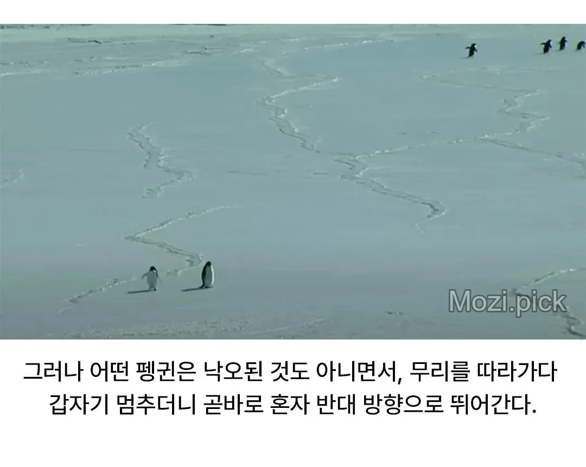
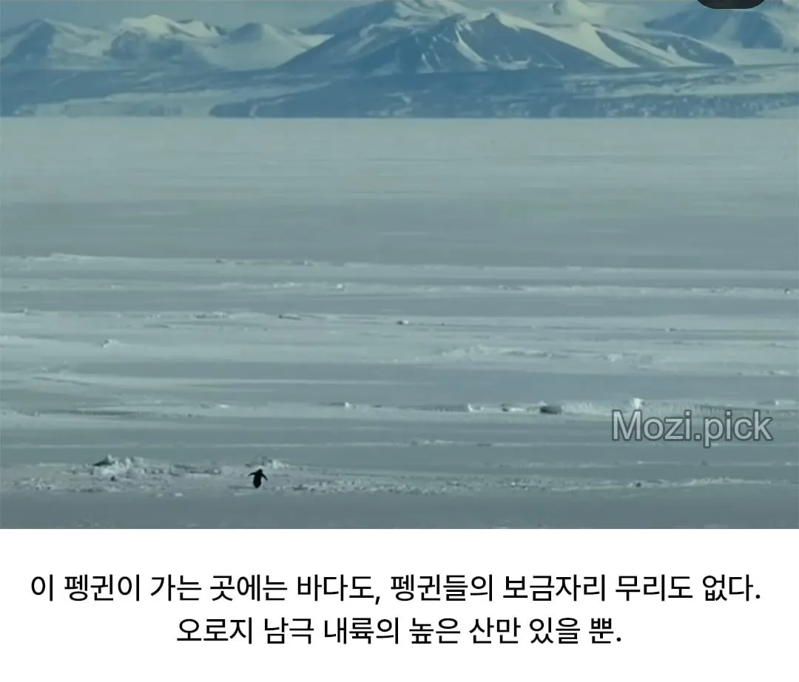
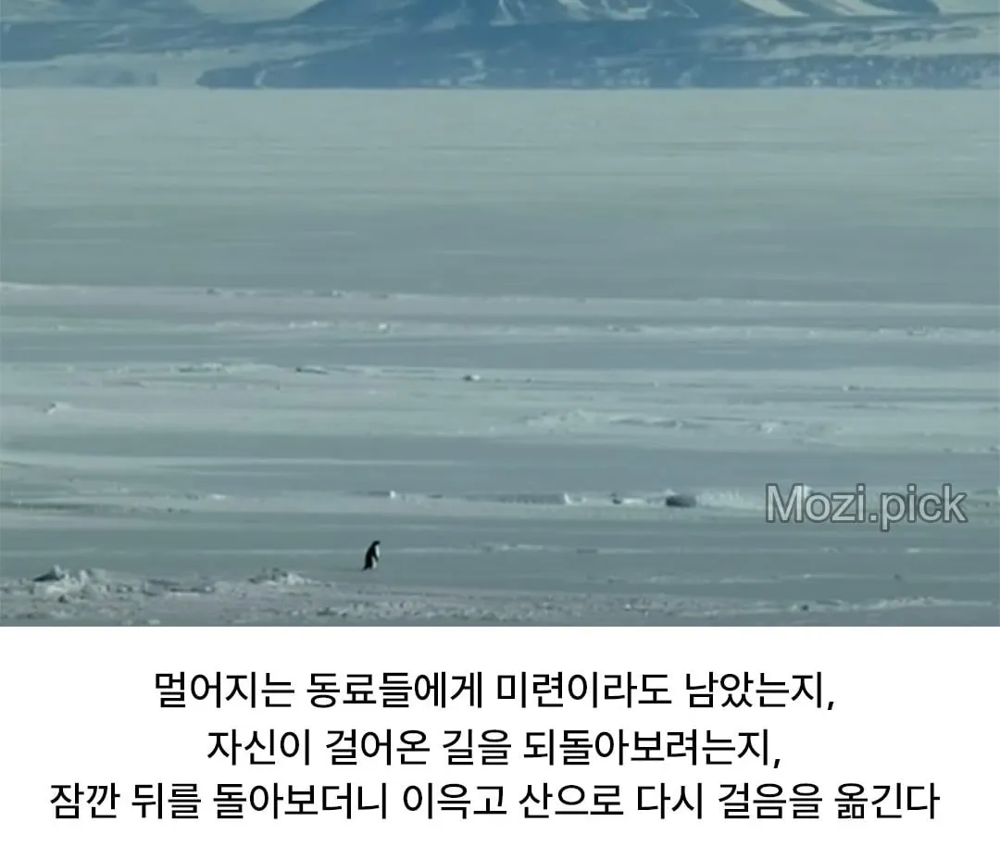
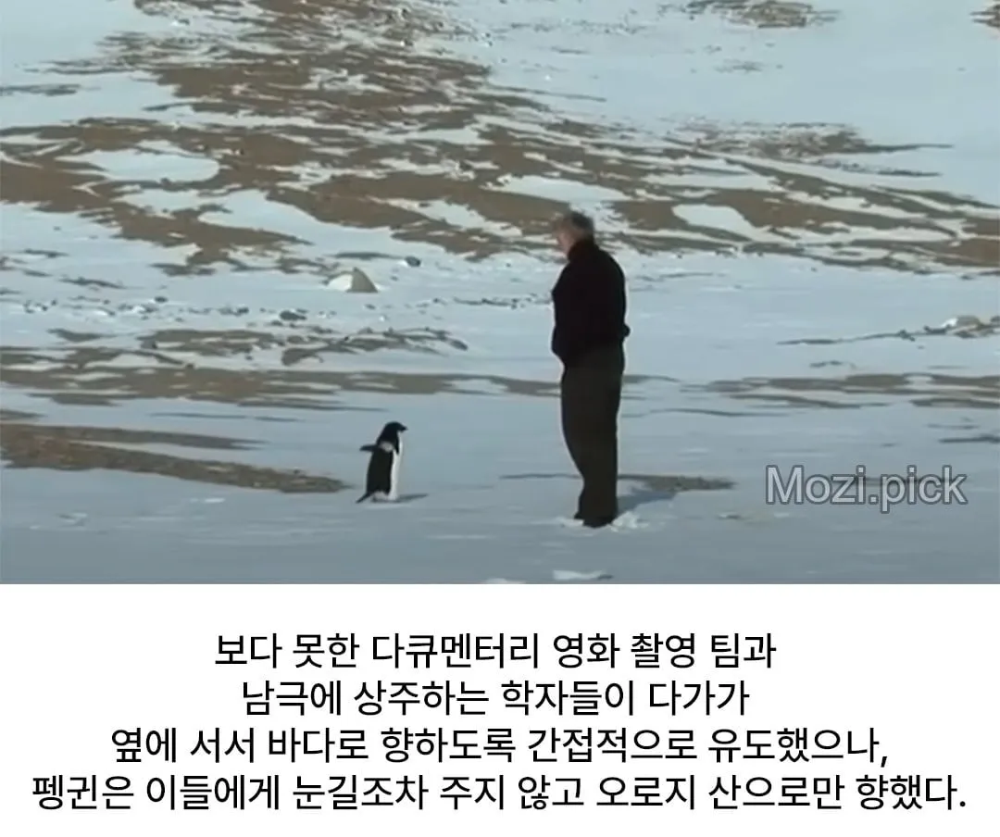
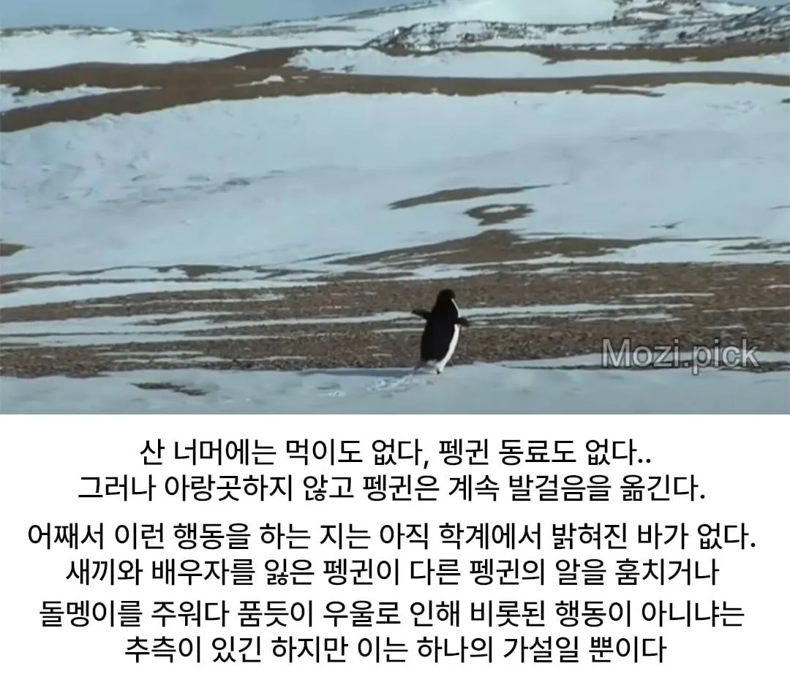
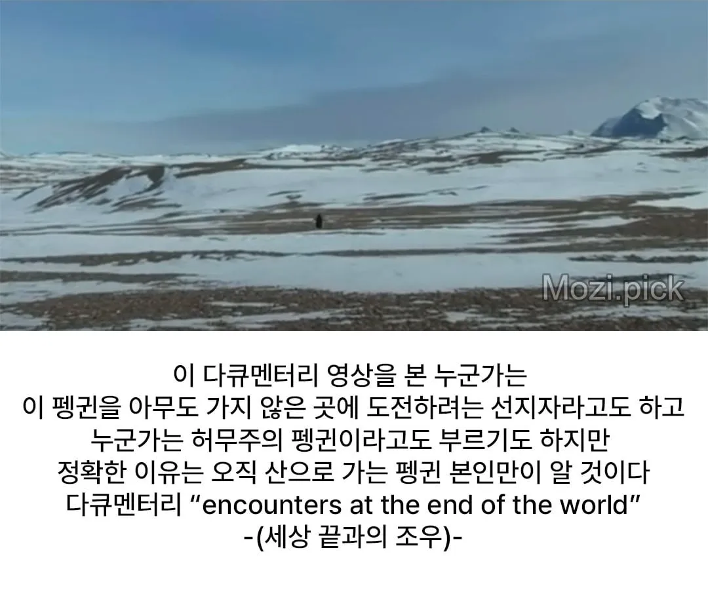

저거 밈은 누군가 프로파간다로 만들었단 썰이있음 ..한창 미국이 그린란드먹는다고 할때..
저거 다큐보면 펭귄 자살하러가는거임
왜 자살하러감? 이유는 모르는건가
너네한데 먹힐바에 대가리에 총쏨다는건가?
뭔가 짠하네...
귀신이 꼬신거임
팽돌아아아아아아 애미다아아아아 정어리 먹자아아아아
얼마나 맛잇는 정어리길래 산골짜기까지 찾아가노
네비가 뭘알아 이쪽길은 내가 잘안다니까
귀여워라 레알 퍼스트펭귄이네 나는 퍼스트 펭귄이 될테야!!
저러면 허들링 못해서 얼어죽을거아냐
but…why?
But why?
훗 그곳에 산이 있기 때문이다 인간 애송이